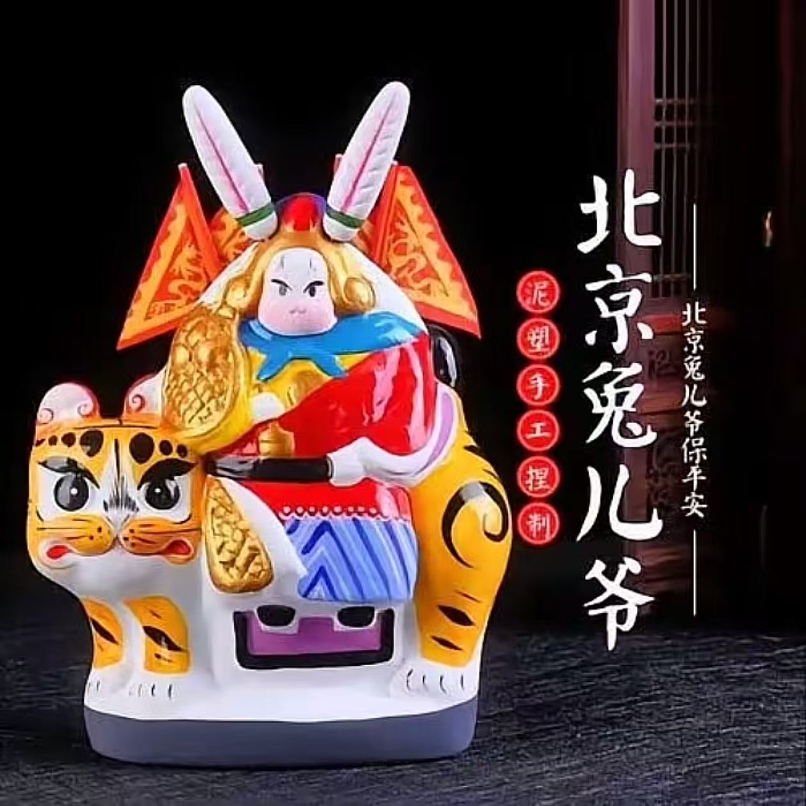

兔儿爷是北京中秋节特有的传统手工艺品，是老北京中秋的吉祥物，起源于明代，至今已有四百多年的历史。传说月亮上有嫦娥和玉兔，玉兔下凡给人们治病，人们为了感谢玉兔，就用泥巴塑成玉兔的形象，供奉起来，慢慢就演变成了兔儿爷。
兔儿爷的形象非常有特点，兔首人身，披着金甲红袍，背后插着靠旗，骑着狮子、老虎、大象、麒麟等瑞兽，威风凛凛，又憨态可掬。兔儿爷是泥做的，经过模子扣出、修整、彩绘，色彩鲜艳，造型生动，是北京特有的民间艺术品。
过去北京人过中秋节，家家户户都要请兔儿爷，供在桌上，摆上月饼、水果，拜完月之后，兔儿爷就成了孩子们的玩具。兔儿爷是老北京中秋的象征，老舍先生在《四世同堂》里就写过："兔儿爷是中秋的象征，它象征着月亮，象征着团圆，象征着吉祥。"现在兔儿爷已经成了北京非物质文化遗产，是最有北京特色的伴手礼。
文化意义：中秋祭月的吉祥物，老北京的童年记忆
形象特点：兔首人身，披甲插旗，骑瑞兽，泥胎彩绘
购买地点：琉璃厂、南锣鼓巷、潘家园、北京非物质文化遗产馆